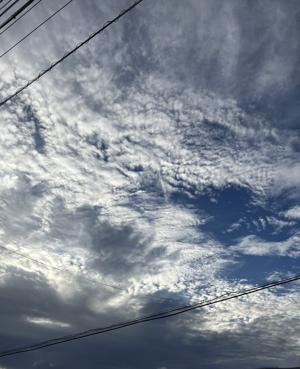
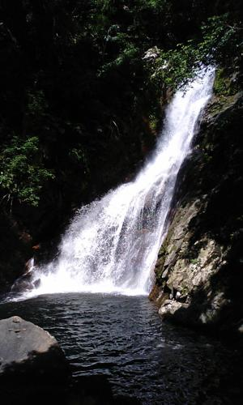
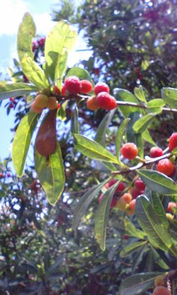

うるがいの話 ある日
最新: 比地大滝【うるがいの話 ある日】とは 一日だけのプログです
『うるがいの話』の最新一日だけのプログで、通信料が少なく経済的だ。カニの画像をクリックすると全ての日付が載る『うるがいの話』サイトを表示します
|
|
【うるがいの話】 うるがい(ｳﾙｶﾞｲ urugai)とは、『もずくがに』の名前でとても大きくなります。 |
|---|---|
|
|
【カミマヤーの話】 猫のことを方言でマヤーといいます。カミマヤー（kamimayaa）とは、神の猫のことです。 |
|
【たながぁの音楽】 たながぁ（ﾀﾅｶﾞｰ tanagaa）とは手長えびのことで、何種類かあり大きいのは車 エビぐらいになります。 |

|
【ぶながぁの話】 ぶながぁ(ﾌﾞﾅｶﾞｰ bunagaa)とは、赤い髪の毛、赤い身体、そして身長は１ｍ２０ｃｍ ぐらい、川の蟹を食べているの目撃された。場所は沖縄県国頭郡大宜味村のと ある村僕の隣近所に住んでいる爺さんから、聞いた話です。 |
|
|
【ギーマの話】 ギーマ(giima)とは、山原の里山に咲くスズランに似た、 花を付けます。実は食べられます、 気が付くと口の周りが紫になっています。 |
2024年11月16日 (土）比地大滝
15:13

「いつもテレビで、あっち（県外）は大変だね、と思っていたけど、自
分の娘たちがそういう風になるなんて・・・」
ネットで拾った言葉である。きのう、空港に行くとき子供たちに大雨の
被害を同じ表現で話していた。大きな被害のあった比地、辺士名高校生
の卒業パティ（酒を飲む）は比地大滝へ行く途中の川原で、行われた。
２０１０年５月５日の比地大滝

高校のワンダーフォーゲル部も、比地大滝へ途中の川原でキャンプをし
た。
比地大滝へいく途中で写したヤマモモ

昔は、ただで大滝へ行けた。写真を撮った時は、遊歩道ができお金を払
って入場した。ネットで調べると大滝へは行けないらしい、休業中とあ
った。大変だな・・・。どっちかと言うとイケメンだったかな国頭村長
新聞の写真をみるとオジーになっている。私も一緒である。
本日のバタフライピーの花、５４収穫。
気温が上がり、湿度がたかいせいか復活している。湿度が高く、花びら
が乾燥しない！！、困ったもんだ。
１４時５４分 ビットコインの総資産 ￥４０、７８３（↑７９１）